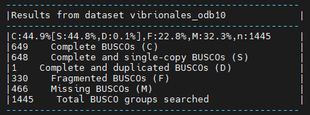

Hybrid-genome-assembly-practice
For full documentation visit MSc Bioinformatics moodle.
Context
Several patients have arrived at the hospital showing a common clinical presentation suggesting an infectious disease. Samples were collected and submitted to the laboratory and subjected to analyses for a complete panel of pathogens, which negative results for all the test. Given the urgency of the situation and the need of a clear diagnostic to implement a treatment to content the progress of infections, the laboratory isolated one strains and extracted the DNA to try to identify the pathogen through sequencing...
The lab contacts the head of the genomic department and request the sequencing of the strain to try to identify the species through the taxonomic assignation of the sequences. In addition to the species, information about virulence traits and antibiotic resistance have been also requested to be inferred from the “in silico” analyses of the strain genome.
To sequence the pathogen, a MinION device from Oxford Nanopore is available in your laboratory, although the team decided to obtain a second sequence using Illumina to contract with the Nanopore sequence and try to improve the quality of the genome. As your lab has not a Illumina sequencer, the DNA extraction is shipped to an external facility to be sequenced using Illumina requesting a “good quality” in terms of coverage (depth). Now your boss has read that some crazy scientist have started to do something called... hybrid assembly. So she ask you to try this approach ...of course.
Intro
Assemble a genome!
Learn how to create and assess genome assemblies using the powerful combination of Nanopore and Illumina reads
This tutorial explores how long and short read data can be combined to produce a high-quality ‘finished’ bacterial genome sequence. Termed ‘hybrid assembly’, we will use read data produced from two different sequencing platforms, Illumina (short read) and Oxford Nanopore Technologies (long read), to reconstruct a bacterial genome sequence.
In this tutorial we will perform ‘de novo assembly’. De novo assembly is the process of assembling a genome from scratch using only the sequenced reads as input - no reference genome is used. This approach is common practise when working with microorganisms, and has seen increasing use for eukaryotes (including humans) in recent times.
Long reads can be used together with short reads to produce a high-quality assembly. Nanopore long reads (commonly >40,000 bases) can fully span repeats, and reveal how all the genome fragments should be arranged. Therefore, while long reads will provide the general structure of the genome, short reads will provide that high base-level accuracy needed to close a genome.
Data: Nanopore reads, Illlumina reads
Tools: Canu, Pilon, Unicycler, Quast, Busco, BWA, Samtools,FastQC, Trimmomatic,Cutadapt,Nanoplot,Filtlong,Porechop
Section 1: Read inspection and QC
In this section we will import and perform quality control (QC) on our data.
Today we will use 4 pieces of data - 2 short read sets, 1 long read set, and a reference genome (to compare our assembly with).
Getting the data
For the illumina reads, the external organization has already uploaded the reads to the NCBI SRA database (Sequence Read Archive) which is the largest publicly available repository of high throughput sequencing data.
To download the data we will use the fasterq-dump tool from the SRA-toolkit which should be already installed in your conda environment.
We know that the accession ID of our samples is SRR10345480 and SRR9042863.
Before we start typing and running commands, is important to generate a new directory where all the files are going to be saved and organized.
In our case we are going to create a directory called hybrid_assembly and a subdirectory called data in this subdirectory is where we are going to save our reads. Do not move them at any moment
mkdir -p hybrid_assembly/data
cd hybrid_assembly/data
fasterq-dump {accesion_ID} #repeat for both accesion IDs
Read inspection
Often, it is prudent to first assess the quality of our read sets. For the short reads, we are concerned with base quality, sequence duplication, and presence of adapter sequences. For nanopore, we want to know about the length and quality distribution of reads, as these may both be highly variable.
FastQC creates summary reports for short read data. If we were on a different situation with multiple samples and therefore, multiple fastqs, we could then use a tool called MultiQC to combine these reports for easy viewing.
For Nanopore data, NanoPlot is a great option. It creates plots which aim to summarise the length and quality distribution of long read sets.
Depending on these summaries, we may choose to perform a QC step to remove any poor quality reads before proceeding.
Run FastQC
As said before, we will use FastQC to see the quality of our Illumina reads. Once again, remember Organization is key, therefore we are going to create a new directory where we are going to save all our Quality Control outputs
#go to the main directory hybrid_assembly
mkdir -p qc/illumina_raw
cd qc/illumina_raw
fastqc data/SRR*_1.fastq data/SRR*_2.fastq -o ./
FastQC produces two outputs - 'RawData', and 'html'. Typically, the html is for human viewing, and the RawData can be given to other programs, such as MultiQC.
Let's see how the QC went on the Illumina Reads


Question 1(click to reveal)
What do you think about them? Do you think they have enough quality? Let's discuss, take your time to inspect the whole htmlClean Illumina reads
It seems that our samples have some unwanted short reads and the quality of some bases is not as good as it could be.
There are plenty of programs such as trimmomatic or cutadapt that can be used to filter our Illumina reads.First we will get rid of the Illumina adapters, in this case we use Nextera adapters, using Cutadapt.
Then we will filter to the get the best possible reads by quality and length using Trimmomatic
#go to the main directory hybrid_assembly
mkdir -p qc/trimmomatic
cutadapt -a CTGTCTCTTATACACATCT -A AGATGTGTATAAGAGACAG -o qc/trimmomatic/out_illumina_1.fastq -p qc/trimmomatic/out_illumina_2.fastq data/SRR9042863_1.fastq data/SRR9042863_2.fastq
trimmomatic PE -threads 4 -phred33 qc/trimmomatic/out_illumina_1.fastq qc/trimmomatic/out_illumina_2.fastq qc/trimmomatic/illumina_trimmed_1.fastq qc/trimmomatic/illumina_unpair_1.fastq qc/trimmomatic/illumina_trimmed_2.fastq qc/trimmomatic/illumina_unpair_2.fastq SLIDINGWINDOW:20:20 MINLEN:250
We have generated two new fastqs called illumina_trimmed_1.fastq and illumina_trimmed_1.fastq.  From now on when we say Illumina reads, these are the ones that we are talking about.
Now is time to see how this new fastqs differ from the others.
From now on when we say Illumina reads, these are the ones that we are talking about.
Now is time to see how this new fastqs differ from the others.
#go to the main directory hybrid_assembly
mkdir -p qc/illumina_trimmed
fastqc qc/trimmomatic/illumina_trimmed_1.fastq qc/trimmomatic/illumina_trimmed_2.fastq -o qc/illumina_trimmed

 Look at the difference in number of reads between the raw and the trimmed fastqs.
Look at the difference in number of reads between the raw and the trimmed fastqs.
Run NanoPlot
As you know the reads of Nanopore are much longer than the Illumina ones, although in some cases (such as 16S experiments) we can use FastQC to look at them, it is better to use
a tool specifically designed for Nanopore, in this case we are going to use Nanoplot
#go to the main directory hybrid_assembly
mkdir -p qc/nanoplot_raw
cd qc/nanoplot_raw
NanoPlot -t 4 --fastq ../../data/SRR10*.fastq
Our median read length (7,365 pb) is quite good for Nanopore data,although some reads can be even longer, but the mean read quality is not that good (9.7), not so much time ago we would say that this quality is quite nice but the last generation of Nanopore flowcells produce much better reads, some of them at the same level as Illumina. Now as we did before with the Illumina reads, let's clean the Nanopore reads.
Clean Nanopore reads
For cleaning our Nanopore Reads we will be using Porechopand Filtlong which are both of the most standardized software used for that. Porechopis the equivalent of
Cutadapt in Illumina and Filtlong is the equivalent of Trimmomatic.
Why do we need different programs to do that? Well, different technologies need different approaches, although some of the most popular software right now can support all PacBio, Illuminaand Nanoporereads.
#go to the main directory hybrid_assembly
mkdir -p qc/nanoplot_trimmed
cd qc/nanoplot_trimmed
porechop -i ../../data/SRR10*.fastq -o ./nanopore_adapter_clean.fastq
filtlong --min_length 1000 --keep_percent 90 --mean_q_weight 9 nanopore_adapter_clean.fastq > nanopore_filtered.fastq
As we did with the Illumina reads, from now on when we say nanopore reads we will be referring to nanopore_filtered.fastq
assign taxonomy of the pathogen
Now that we have our reads clean, it is always interesting to know what are we looking for. Doing an assembly without knowing what are we facing could be terrible. For example, imagine that you have assembled a genome with 6 closed chromosomes, first of all, congratulations because that is not easy, but then you assign somehow the taxonomy of that organism and... WOW is a Ficus! üçÉ üëèüëè, but you rapidly realize that Ficus is 2n=26 and something has gone wrong.
There is plenty of ways to assign taxonomy when doing an assembly, for example one of the most used programs to assign taxonomy to illumina reads is Kraken2, another one used with Nanopore reads
could be Emu. But these programs require powerful machines, and let's be honest, your gaming laptop MSI i9 with 12 Cores and 32 GB of Ram is not as powerful as the clusters that are typically used for this
jobs (we are talking about >40 Cores >100GB ram).
To make things easy and rapid, we are going to do a trick. Taking advantage of the length of the nanopore reads, we will select the first read of the fastq file, or the second, it doesn't matter whilst is long enough, and they all should be after the QC that we have done, then we are going to blast it!
head qc/nanopore_trimmed/nanopore_filtered.fastq #you can also open the file and select the first read
Fasta format the GCA_009649015.1 genome in a unique file.
Once you have download it, change the name of the fasta to VP_reference_genome.fasta and save it in the data directory.
Section 2: Nanopore draft assembly
A baseline for "high-quality" assemblies
To begin, we will identify what a high-quality assembly looks like.
When running assembly tools, we want to check the quality of assemblies we produce. It is paramount that genome assemblies are high-quality for them to be useful.
To get a baseline for what is considered a "high-quality" assembly, we will first run a common assembly QC tool - Busco - on a published genome similar to the organism we are working with today.
Busco
Busco analysis uses the presence, absence, or fragmentation of key genes in an assembly to determine its quality.
Busco genes are specifically selected for each taxonomic clade, and represent a group of genes that each organism in the clade is expected to possess. At higher clades, 'housekeeping genes' are the only members, while at more refined taxa such as order or family, lineage-specific genes can also be used.
We expect the reference genome to have all of these genes. When running Busco, we expect it to find most (if not all) of these in the assembly.
Let's create a new directory called assembly_qc. We want to create this directory outside from the qc directory we have been working on.
remember the directory structure we are using
hybrid_assembly[data(fastqs), qc(illumina_raw, nanopore_raw, illumina_trimed, fastp), assembly_qc]
#go to the main directory hybrid_assembly
mkdir -p assembly_qc
cd assembly_qc
busco -i ../../data/VP_reference_genome.fasta -l vibrionales -o busco_reference --augustus --mode genome

It seems that BUSCO could find almost all expected genes in the reference genome assembly. By looking at the results, we see that we have 1443 / 1444 Complete BUSCOs, one being complete and duplicates, and another one missing.
This will form the baseline for the BUSCO QC results expected of a high-quality genome assembly.
From here, we will use our input DNA sequence data to assemble the genome of the sequenced organism, and will compare the QC results to that of the published VP_reference_genome.fasta assembly.
Draft assembly with Canu + Nanopore reads
Our first assembly will use the long-read data to create a draft genome, then the short-read data to "polish" (improve) the draft into a better assembly.
We will start by using a long-read assembly tool called Canu to create an assembly using the Nanopore long-read data.
Once again we need to create an specific directory for that, let's move again to the general hibrid_assembly directory
we will create a directory called assemblies where we will compute all the assemblies in this practice
#go to the main directory hybrid_assembly
mkdir -p assemblies/canu
canu -p canu -d assemblies/canu -nanopore qc/nanopore_trimmed/nanopore_filtered.fastq --genomeSize=5.1m
We need to compare this assembly with our reference genome. For that we are going to use Busco again and `Quast
#go to the main directory hybrid_assembly
mkdir -p assembly_qc/canu_nanopore
cd assembly_qc/canu_nanopore
busco -i ../../assemblies/canu/canu.contigs.fasta -l vibrionales -o busco --augustus --mode genome --cpu 4

Question 2(click to reveal)
As you can see we do not get the same output as the reference, Why do you think this is happening?Quast
Aside from Busco, we can use another method to perform assembly QC. In this case Quastallows us to compare two assemblies to determine their similarity.
We know that Bacteria can differ a lot between individuals of the same species, nevertheless they should have the same number of chromosomes with similar lengths. What we are going to do know is compare both VP_reference_genome.fastaand this new draft assembly based on Nanopore.
You know what is coming next, Yes! another directory 
#in the same assembly_qc/canu_nanopore directory as before
quast ../../assemblies/canu/canu.contigs.fasta -r ../../data/VP_reference_genome.fasta -o quast
Quast should be a directory with a set of files, we are interested in the report.html file
Now you should be looking at something like this:
what are we looking for? Well there is plenty of information here but you should take a closer look to: * Genome fraction * Number of contigs * Number of misassemblies * Number of mismatches per 100Kbp * Number of indels per 100Kbp * Total length * Largest contig * L50 * N50 * LGA50 * NGA50
Question 3(click to reveal)
Which is the differnce between L50 and LGA50? What about N50 and NGA50?Question 4(click to reveal)
What do you think about the nanopore assembly? is it good enough for you?Assembly polishing with Pilon
We should be able improve our assembly with the Illumina reads available and correct some of these errors.
This process involves two steps. We will first align the Illumina reads to our draft assembly, then supply the mapping information to Pilon, which will use this alignment information to error-correct our assembly.
Illumina reads have much higher per-base accuracy than Nanopore reads. We will map the Illumina reads to our draft assembly using a short-read aligner called BWA-MEM. Then we can give Pilon this alignment file to polish our draft assembly.
This is maybe one of the most complex steps that we are going to compute so be careful and don't get lost
Map Illumina reads to Nanopore draft assembly
To map the Illumina reads to the Nanopore assembly, first we need to index our assembly, for that we will be using Bwa and Samtools
Indexing is an essential step in many bioinformatics applications, as it can greatly reduce the computational time and resources required for sequence alignment. It allows the alignment algorithm to quickly locate the query sequences in the reference genome, without having to search the entire genome for matches
#go to the main directory hybrid_assembly
mkdir -p assemblies/error_corrected_canu
cd assemblies/error_corrected_canu
mkdir index
bwa index -p index/index ../canu/canu.contigs.fasta
bwa mem index/index ../../qc/trimmomatic/illumina_trimmed_1.fastq ../../qc/trimmomatic/illumina_trimmed_2.fastq | samtools sort -o illumina_sorted.bam
samtools index -bc illumina_sorted.bam
We should get a BAM file as an output. This is tabular data recording information about how reads were aligned to the draft assembly.
Now we can use that the illumina_sorted.bamto run Pilon.
Pilon has ended we should find a unique Fasta file in the pilon directory
Assembly QC
Now that we have run Pilon, thanks to the help of the illumina reads we should get a much better assembly than before.
But we cannot call ourselves scientist only with assumptions we need facts. Therefore, let's run Busco and Quast...yes, again 
#go to the main directory hybrid_assembly
mkdir -p assembly_qc/canu_nanopore_illumina
cd assembly_qc/canu_nanopore_illumina
busco -i ../../assemblies/error_corrected_canu/pilon/pilon.fasta -l vibrionales -o busco --augustus --mode genome --cpu 4
quast ../../assemblies/error_corrected_canu/pilon/pilon.fasta -r ../../data/VP_reference_genome.fasta -o quast

Question 5(click to reveal)
What do you think about the results? Do you see any improvements?Section 3: Hybrid assembly - Unicycler
In this section, we will use a purpose-built tool called Unicycler to perform hybrid assembly.
Unicycler uses our Nanopore and Illumina read sets together as input, and returns an assembly. Once we have created the assembly,
we will assess its quality using Quast and Busco and compare with our previous polished assembly.
Unicycler performs assembly in the opposite manner to our approach. Illumina reads are used to create an assembly graph, then Nanopore reads
are used to disentangle problems in the graph. The Nanopore reads serve to bridge Illumina contigs, and to reveal how the contigs are arranged
sequentially in the genome.
Run Unicycler
#go to the main directory hybrid_assembly
unicycler -1 qc/trimmomatic/illumina_trimmed_1.fastq -2 qc/trimmomatic/illumina_trimmed_2.fastq -l qc/nanopore_trimmed/nanopore_filtered.fastq -o assemblies/unicycler -t 4
assemblies/unicycler directory, you should find the assembly file called assembly.fasta
Assembly QC
As we did with the Canu and Pilon assembly, we need to perform a Quality Control (QC) to our newly assembled genome.
#go to the main directory hybrid_assembly
mkdir -p assembly_qc/unicycler_alone
cd assembly_qc/unicycler_alone
busco -i ../../assemblies/unicycler/assembly.fasta -l vibrionales -o busco --augustus --mode genome
quast ../../assemblies/unicycler/assembly.fasta -r ../../data/VP_reference_genome.fasta -o quast
these are the results that we have obtained from Unicycler:


Question 6(click to reveal)
Which are the differnces between the pilon assembly and this one?Question 7(click to reveal)
What do you think about the hybrid assembly? is it good enough for you?Section 4: Nobody expects this combo - Unicycler x Canu
As you have read in the section 4 title, now we are going to do a Unicycler run based on our Canu run, and yes! this is possible.
For that we are going to use the Unicycler option --existing_long_read_assembly. Remember when we mapped the illumina reads to the Canu draft assembly soPilon could improve
our the assembly? Well let's say this is something similar. This time Unicycler instead of building everything without a base, it will have de Canu_improved_assembly as baseline,
and you will see that this time we will have a better result.
#go to the main directory hybrid_assembly
mkdir -p assemblies/unicycler_canu
cd assemblies/unicycler_canu
unicycler -1 ../../qc/trimmomatic/illumina_trimmed_1.fastq -2 ../../qc/trimmomatic/illumina_trimmed_2.fastq -l ../../qc/nanopore_trimmed/nanopore_filtered.fastq -o ./ -t 4 --existing_long_read_assembly ../error_corrected_canu/pilon/pilon.fasta
I can't believe it! We are at the end, just compute the QC of that assembly and let's go back home 
#go to the main directory hybrid_assembly
mkdir -p assembly_qc/unicycler_canu
cd assembly_qc/unicycler_canu
busco -i ../../assemblies/unicycler_canu/assembly.fasta -l vibrionales -o busco --augustus --mode genome --cpu 4
quast ../../assemblies/unicycler_canu/assembly.fasta -r ../../data/VP_reference_genome.fasta -o quast